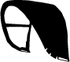
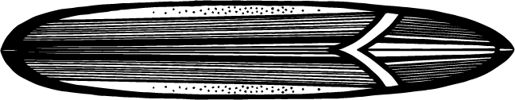
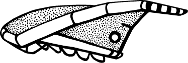

Por Qué Deberías Hacer Deportes Acuáticos
Lo que descubrirás en este post:
- 💧 La historia de cómo descubrí los deportes acuáticos
- 🌊 Los diferentes tipos de deportes acuáticos
- 🏄♂️ Qué hace único a cada deporte
- 🔀 Por qué mezclar deportes acuáticos es el truco definitivo
- 🧠 Beneficios para tu cuerpo y mente
- 🧩 ¡Un test para encontrar tu deporte ideal!
Mi Viaje — Y el Tuyo
Empecé con los deportes acuáticos en mi adolescencia. Mi primer amor fue el windsurf: sentir la vela tirar y deslizarme sobre el agua. Luego descubrí el kitesurf, que enseñé durante casi 20 años. Una danza técnica con la naturaleza. Después vino el surf — más crudo, más sobre sensaciones y menos sobre equipo. Ahora me encanta jugar con las olas, incluso sin tabla — el bodysurf me recuerda que el cuerpo es suficiente.
Pero esta no es solo mi historia. Es sobre ti. Tal vez tienes curiosidad por saber qué deporte puede abrirte una puerta. Aquí tienes algunas opciones.
Tipos de Deportes Acuáticos y Qué Hace Único a Cada Uno 🌊
Kitesurf

Un deporte técnico y dinámico que combina la potencia del viento con la navegación acuática. Aprendes a controlar la cometa, equilibrarte en la tabla y hacer maniobras aéreas.
Lo que lo hace único: El kitesurf es una danza con el viento. No solo montas las olas — ¡vuelas sobre ellas!
Surf

Se trata más del flujo y de leer las olas. No dependes de más equipo que una tabla. Es meditativo, pero físicamente intenso.
Lo que lo hace único: Te conecta profundamente con el ritmo del océano. Es puro y lleno de alma.
Wing Foil

Una mezcla entre surf y kite. Sostienes un ala y navegas con una tabla foil. Es ligero, futurista, y se siente como volar.
Lo que lo hace único: Como deslizarte por el aire. El foil te eleva sobre el agua mientras el ala te da potencia y libertad.
Bodysurf
Minimalista y puro. Sin tabla, sin cometa — solo tú y el océano. Usas tu cuerpo para moverte con la ola.
Lo que lo hace único: Todo es instinto. Es la forma más natural de surfear — sin equipo, solo sincronización, posición y alegría.
Mézclalo — Por Qué Combinar Deportes Acuáticos es Genial 🌤️
Una de las mejores cosas de los deportes acuáticos es la flexibilidad. Cada día en el mar es diferente — tener varias habilidades significa que siempre puedes aprovecharlo:
- 💨 ¿Día ventoso? ¡Coge tu cometa o ala y vuela sobre el agua!
- 🌊 ¿Olas pero sin viento? Es hora de montarlas con tu tabla o tu cuerpo.
- 🌪️ ¿Condiciones caóticas? Perfectas para el bodysurf — sin equipo, solo tú y el mar.
Tarifa es uno de los mejores lugares del mundo para experimentar esta variedad. Conocida como la capital del viento en Europa, ofrece condiciones mixtas que mantienen cada día fresco.
Y si hay tormenta o condiciones impredecibles, ahí es donde brilla el bodysurf — sin equipo, solo tú y el poder del océano. Tarifa te enseña a adaptarte, fluir y disfrutar cualquier condición.
Los Beneficios de los Deportes Acuáticos 💪
Los deportes acuáticos son más que diversión — son terapia para cuerpo y mente. Esto es lo que aportan:
- 🏃♀️ Ejercicio completo: mejora resistencia, flexibilidad y fuerza.
- 🧠 Claridad mental: libera dopamina y endorfinas — químicos naturales de la felicidad.
- 🌊 Agua fría: mejora la inmunidad y circulación.
- 💨 Agua salada: limpia tus senos nasales y piel.
- ⚡ Adrenalina: mejora tu enfoque y toma de decisiones.
- ☀️ Sol: aumenta la vitamina D y mejora el ánimo.